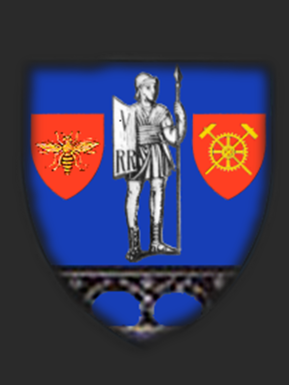
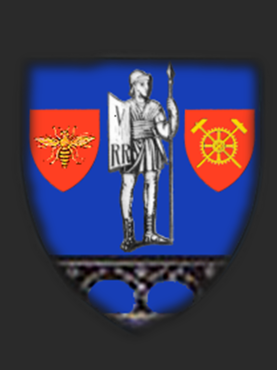

Deconectaţi de realitatea cotidiană, în locurile izolate, unde nu găsim semnal pentru telefonul mobil, redescoperim lucruri, oameni, tradiţii despre care am uitat sau pe care le credeam dispărute.

An de an, la început de mai, la Rudăria, în Banatul Montan, are loc Sâmbra oilor. Sărbătoarea se mai numește Smâlţul sau Măsuratul oilor (primul muls al oilor de când au fost urcate la munte) şi marchează începutul anului pastoral. În această zonă se păstrează o veche formă de asociere între ciobani, iar Smâlţul are menirea de a indica, peste vară, cât lapte i se cuvine fiecăruia din producţia întregii turme.
Dimineaţa în zori, tineri şi bătrâni părăsesc satul pentru a urca la stâna din vârful muntelui, unde are loc sărbătoarea. În două-trei camioane încape aproape toată suflarea satului. Urcuşul, pe un drum sălbătic de o frumuseţe rară, cu liliac roz de o parte şi de alta, durează aproape o oră. Alţii aleg să urce pe jos, alţii călare, iar alţii, veniţi de la oraş, cu maşinile de teren. Satul rămâne cufundat în linişte: doar cei foarte bătrâni şi bolnavii nu urcă pe munte.
La stână, ciobanii au pregătit focul cu o seară înainte, pentru ca dimineaţa jarul să fie încins, numai bun pentru mieii ce vor fi puşi la frigare.

Pe pajiştea alpină se întind două mese mari, la care au loc toţi locuitorii satului. Mieii sacrificaţi au fost umpluţi cu orez amestecat cu măruntaiele măcinate şi sunt înfipţi în ţepuşe de lemn, iar apoi aşezaţi aşa deasupra focului.

În timp ce câţiva săteni au grijă de mieii puşi la fript, cei mai mulţi se mută în strungă, unde a început Măsuratul oilor.

Desfăşurat ca un concurs, evenimentul atrage sătenii şi în special copiii, care aşteaptă să primească banii puşi în fiecare galeată înainte de a începe mulsul.

După ce s-au făcut măsurătorile, toţi sătenii, în frunte cu primarul şi cu preotul, se aşază la mese.

Alături de carnea de miel merge și coleșa (mămăliga) cu brânză.

Festinul durează până înspre seară, când lumea se întoarce în sat. La coborâre e imposibil să nu remarci din nou frumuseţile zonei: stâncile abrupte, urmele şiroaielor de apă, pâlcurile de liliac şi morile de apă de pe valea Rudăricăi care macină, de sute de ani, făină pentru tot satul.